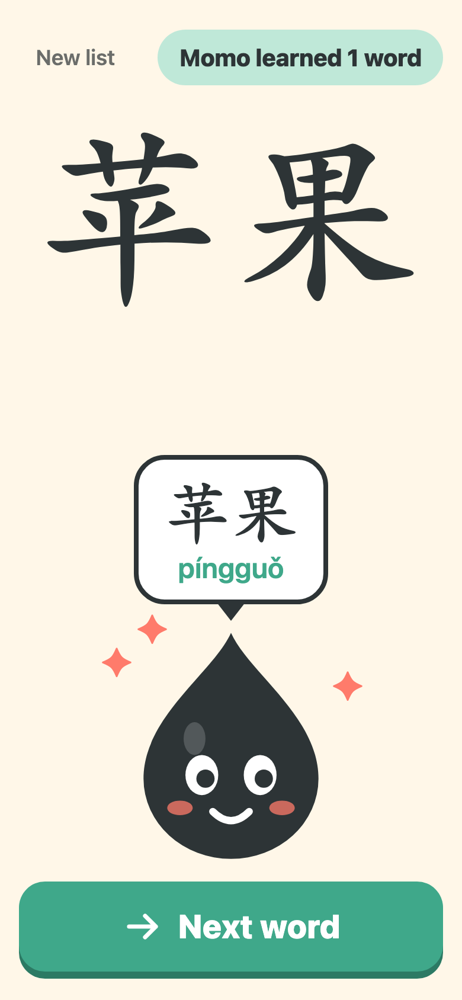
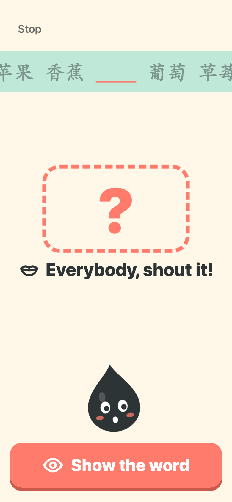
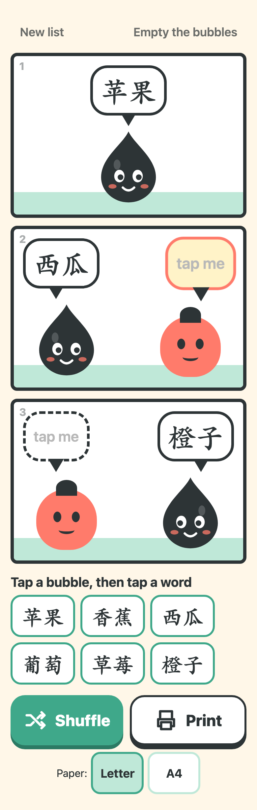

Momo fun spikes: keep, change, or cut?
Three small prototypes where kids perform Chinese instead of filling in sheets. Each one starts from a word list the teacher pastes in. These are prototypes to react to, not finished game modes. They are meant to be tapped by the teacher on one shared screen.
The Momo drawing is a placeholder (no official Momo art exists yet). Screenshots are phone width, taken mid-game with a real pasted fruit list (苹果, 香蕉, 西瓜, 葡萄, 草莓, 橙子).

1. Teach Momo
The kid is the teacher: they say the word out loud, Momo is confused the first time, then "gets it", bounces, and repeats it.
More: Momo confused · a 5-character word



2. Karaoke Blanks
The words play one at a time, karaoke style. Some turn into blanks, the class shouts the missing word, one tap shows it and Momo cheers.
More: setup (pick blanks, speed) · word being sung · reveal with cheer



3. Comic Bubbles
A 3-panel comic with empty speech bubbles. Tap a bubble, tap a word, then the class acts out the strip. Shuffle and Print (Letter or A4).
More: on a laptop · long words on a phone · printed page, Letter · printed page, A4